pyGM: Factors Overview¶
For more details, see pyGM.Factor
Factors are the basic building block of our graphical model representations. In general, a factor consists of a set of variables (its “scope”), and the function values f(x) for each joint configuration x (a tuple of values) of its variables. Factors support basic operations common in probabilistic inference, including artihmetic operations, marginalization, optimization, and sampling.
Basics¶
We can create a basic factor object by specifying its variables and a table of values. The table size also specifies the cardinality of each variable; here 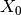 has three values 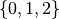 and 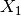 has two, 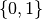. Internally, discrete variables always take on numeric values starting at zero. If you wish to associate these values with other symbols, you must define a mapping yourself. Similarly, internally discrete variables are associated with a non-negative “id number” (, , etc.); you may assign these variables to other names in your code, but only their id number is necessary to refer to them.
>>> import pyGM as gm
>>> import numpy as np
>>> X0 = gm.Var(0,3) # Define variable "X0" taking 3 states
>>> X1 = gm.Var(1,2) # Define variable "X1" taking 2 states
>>> F = gm.Factor([X0,X1], np.random.rand(3,2))
From the Factor class, you can access the variables over which it is defined (its scope), their sizes, the full table of values, or the value of the function at some configuration of its arguments:
>>> F.vars # variables in the factor's arguments
{0,1}
>>> F.dims() # the dimensions / # of states of each variable
(3, 2)
>>> F.table # table representation uses numpy arrays
array([[0.55538171, 0.7854848 ],
[0.29212683, 0.60789923],
[0.48685444, 0.24967191]])
>>> F[2,0] # check F(X0=2, X1=0)
'0.486854436651706'
Warning
Factors store their arguments in sorted order according to their id numbers, not the order in which the variables appear when the factor is created. Thus, to avoid confusion you should be careful when defining and accessing factors to try to do so in id-number order. If you need to access values without knowing the id number ordering, you can use “valueMap” and “setValueMap”:
>>> F.valueMap( {X1:0, X0:2} ) # check entry value
'0.486854436651706'
>>> F.setValueMap( {X1:0, X0:2}, 0.5 ) # set entry to 0.5
Constructor & Accessors¶
| Method | Description |
|---|---|
__init__() |
Constructor |
vars |
Get the list of arguments for F (property) |
table |
Get the table of values for F (property) |
nvar |
Number of arguments (property) |
numel() |
Number of elements in the table specification of F |
dims() |
The dimensions (number of states) of the argument variables |
__str__() |
A basic string representation, “Factor( {ids} )” |
__repr__() |
A string representation that including pointer information on the numpy table |
Arithmetic Functions¶
Basic arithmetic (e.g., plus) is defined to produce a factor equivalent to the operator applied to the argument functions. If both factors have the same variables (arguments), the operation is elementwise; if they have different scopes, the operations produce a new function defined over their joint scope:
>>> F = gm.Factor([X0],[0,1,2])
>>> G = gm.Factor([X1],[1,5])
>>> F+G
Factor({0,1},[0x1b999c0])
>>> (F+G).table
array([[1., 5.],
[2., 6.],
[3., 7.]])
| Method | Description |
|---|---|
__add__() |
Addition, F+G |
__sub__() |
Subtraction, F-G |
__mul__() |
Multiplication, F*G |
__div__() |
Division, F/G |
__pow__() |
Raise each element of F to a (scalar) power p, F**p |
Arithmetic operators also have in-place versions (“+=”, “-=”, etc.) that replace the left-hand-side factor with the result.
A number of unary arithmetic operations are also defined:
| Method | Description |
|---|---|
__abs__() |
Return a factor whose elements are the absolute value of those in F, 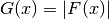 |
__neg__() |
Return a factor whose elements are the negation of those in F, 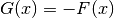 |
exp() |
Return a factor whose elements are exponential of F, 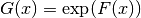 |
log() |
Natural logarithm, 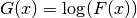 |
log10() |
Base-10 logarithm |
log2() |
Base-2 logarithm |
Some unary operators also have in-place versions:
absIP(),
negIP(),
expIP(),
logIP(),
log10IP(), and
log2IP()
Elimination Operators¶
The most useful aspect of the factor class is to automate the tedious computations underlying many of the mathematical operators common in probabilistic graphical models. These include basic variable elimination operators, specifying the variables to be eliminated:
| Method | Description |
|---|---|
sum() |
Sum over the values of F over one or more variables, e.g., 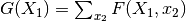 |
max() |
Find the maximum value of F over one or more variables, e.g., 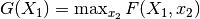 |
min() |
Find the minimum value of F over one or more variables |
lse() |
Log-sum-exp elimination operator, 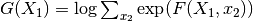 |
sumPower() |
Power summation, 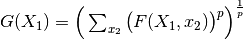 |
lsePower() |
Log-powersum-exp elimination |
The closely related functions
marginal(), maxmarginal(), and minmarginal()
eliminate all variables in the factor except those specified, to produce (unnormalized)
marginal functions.
| Method | Description |
|---|---|
condition() |
Extract the subtable of F corresponding to an assignment to some of F’s args, e.g., 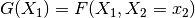 |
argmax() |
Find the configuration of arguments corresponding to F’s maximum value |
argmin() |
Find the configuration of arguments corresponding to F’s minimum value |
sample() |
Draw a configuration of args at random according to F as a probability measure |
See also the related condition2(), argmax2(), argmin2(), which are similar but take differently
formatted function arguments.
Boolean Tests¶
| Method | Description |
|---|---|
isfinite() |
True if F contains only finite values (no inf, -inf, nan) |
isnan() |
True if F contains any not-a-number (nan) values |
isAny() |
Helper function for arbitrary elementwise boolean tests on F |
Other Operations¶
| Method | Description |
|---|---|
entropy() |
Evaluate the Shannon entropy of F, interpreted as a probability measure |
distance() |
Evaluate any of several distances or pseudo-distances between two factors F, G |